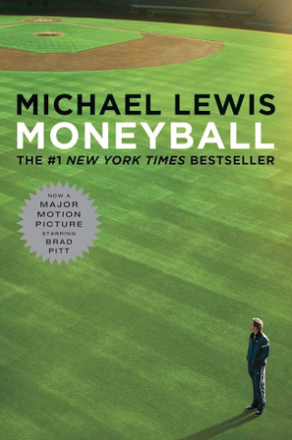

Money Ball
Rating: 06/10
Overview: This book offers fascinating insights into baseball analytics, but is marred by some unnecessary remarks that detract from the overall experience.

Introduction
“Moneyball” by Michael Lewis explores how the Oakland A’s used data and analytics to build a competitive team on a budget. It’s fascinating to see how statistics can revolutionize a traditional sport, but I found the book challenging for three reasons:
I don’t know much about baseball statistics, so I got a crash course while reading.
I wasn’t familiar with most of the people mentioned, and some are portrayed much better in the book than they are in real life.
I found Michael Lewis’s sexist remarks off-putting and wish they had been edited out before publication.
Regardless of these challenges I found this book full of insight, and a worth while read for anyone interested in data analysis. Below I will discus some themes in the book that stuck out to me.
Themes
1. Player Development and Mental Game
Billy Beane’s own struggles as a player informed his understanding of the importance of the mental game in baseball. Recognizing that mental toughness and psychological resilience are as crucial as physical talent, Beane and his team emphasized these aspects in their player development programs. The insights of sports psychologist Harvey Dorfman, who authored “The Mental Game of Baseball,” were particularly influential. Dorfman’s work highlighted the need for players to develop mental discipline and perspective, teaching them to handle failure and maintain focus under pressure. This holistic approach to player development ensured that the Athletics nurtured not just athletic talent, but also the mental fortitude necessary for sustained success.
3. Challenging Traditions
The traditional methods of scouting in baseball heavily relied on subjective assessments and physical attributes, which often led to biased and inaccurate evaluations of players. This created a significant conflict when new analytical approaches, emphasizing objective data and statistical analysis, began to emerge. Billy Beane and his team at the Oakland Athletics epitomized this clash by challenging the scouts. They focused on quantifiable metrics like on-base percentage (OBP) rather than the scouts’ subjective measures, ultimately proving that a data-driven approach could lead to success on the field.
4. Economic Disparities
The disparity between rich and poor teams in baseball has been a long-standing issue, with wealthier teams traditionally able to afford the best players, thereby securing a competitive advantage. Discussions around the potential solutions, such as salary caps or revenue sharing, often revolve around the idea of creating a more level playing field. This economic imbalance forces smaller market teams to find creative ways to compete, showcasing the inefficiencies in how money is spent.
5. Outsider Influence
The influence of outsiders, including community members and intellectuals, has been pivotal in challenging the traditional baseball establishment. Figures like Bill James and Eric Walker brought fresh perspectives and analytical rigor to the sport, advocating for the use of sabermetrics to evaluate player performance more accurately. Their work laid the foundation for a new way of thinking about baseball, moving away from anecdotal and subjective assessments towards a more empirical and data-driven approach.
6. Sabermetrics and Statistical Analysis
Sabermetrics, the empirical analysis of baseball through statistics, has revolutionized how player value is assessed. Pioneers like Bill James and Eric Walker demonstrated that traditional stats like batting average do not fully capture a player’s contribution to the team. Instead, more nuanced metrics such as on-base percentage (OBP) and slugging percentage (SLG) offer a more accurate measure of a player’s effectiveness. OBP accounts for how often a player reaches base per plate appearance, highlighting their ability to avoid outs and extend innings. SLG measures the total number of bases a player records per at-bat, emphasizing their power-hitting capabilities.
This analytical approach transformed baseball, making it possible to quantify aspects of the game that were previously overlooked, such as a player’s plate discipline and situational hitting. By focusing on these advanced metrics, teams can make more informed decisions about player acquisitions and strategies.
7. Key Metrics and Their Calculations
On-Base Percentage (OBP)
OBP = (Hits + Walks + Hit by Pitch) / (At Bats + Walks + Hit by Pitch + Sacrifice Flies)
Importance: Measures a player’s ability to avoid making outs and get on base.
Slugging Percentage (SLG)
SLG = Total Bases / At Bats
Importance: Reflects a player’s power by calculating the average number of bases a player earns per at-bat.
On-Base Plus Slugging (OPS)
OPS = OBP + SLG
Importance: Combines OBP and SLG to provide a comprehensive measure of a player’s overall offensive value.
Wins Above Replacement (WAR)
Includes offensive, defensive, and pitching contributions.
Estimates a player’s total contributions to their team in terms of wins compared to a replacement-level player.
Fielding Independent Pitching (FIP)
FIP = ((13HR) + (3(BB+HBP)) - (2*K)) / IP + constant
Importance: Focuses on the outcomes a pitcher can control (home runs, walks, hit-by-pitches, and strikeouts) to provide a clearer picture of their effectiveness.
Batting Average on Balls in Play (BABIP)
BABIP = (Hits - Home Runs) / (At Bats - Strikeouts - Home Runs + Sacrifice Flies)
Importance: Measures how often a ball in play goes for a hit, helping to separate skill from luck.
8. Efficient Team Building
Efficient team building was at the heart of Billy Beane’s strategy for the Oakland Athletics. By identifying undervalued players who excelled in key statistical areas, the A’s constructed a competitive roster without the need for large financial investments. This approach emphasized the aggregate value of a player’s contributions rather than individual standout skills. Metrics such as On-Base Percentage (OBP) and Slugging Percentage (SLG) allowed the A’s to identify players who could contribute to the team’s success in meaningful ways, even if they lacked the glamour and high market value of more traditionally valued players.
Wins Above Replacement (WAR) also played a crucial role in this strategy. WAR quantifies a player’s total contributions to their team, measuring how many more wins a player provides compared to a replacement-level player, typically a minor leaguer or bench player. By focusing on players with high WAR values, the A’s could ensure that they were acquiring talent that would provide substantial value on the field. This focus on overall contribution rather than specific skills allowed the A’s to trade for or sign players who might have been overlooked by other teams but who could collectively improve the team’s performance.
For example, when the Athletics lost key players like Jason Giambi and Johnny Damon to wealthier teams, they didn’t seek to replace these stars with equally high-priced talent. Instead, they looked for players who could collectively match or exceed the production of the departed stars. By doing so, they could maintain a high level of performance while adhering to their limited budget. This method also included a careful analysis of defensive skills, often undervalued in the market, to ensure that their investments were as efficient as possible.
9. Organizational Change
As the general manager, Billy Beane made decisions for the entire organization, ensuring a consistent application of sabermetric principles across all levels. Beane’s focus on metrics like OBP and SLG led to a uniform strategy that prioritized getting on base and efficient player development. His leadership and willingness to challenge the status quo enabled the A’s to remain competitive despite their limited budget, demonstrating the critical role of strong, innovative leadership in driving organizational change.
Conclusion
In conclusion I’d read this book. It has a lot of insightful information, but if you don’t know baseball it could be a lot more than meets the eye.
2. Social and Cultural Issues
“Moneyball” frequently addresses the theme of control within the scouting community, where scouts wield significant influence despite lacking substantial data. Scouts often rely on “tools” to judge a player’s potential, emphasizing physical attributes like running speed and throwing strength over more substantial baseball skills such as plate discipline and on-base percentage. This reliance on subjective measures often leads to problematic commentary, including racist and fat-phobic remarks. By focusing on a player’s statistics the Oakland Athletics sought to remove these biases from the equation, evaluating players based on their actual performance rather than their appearance.
Interestingly, while the book critiques these biases within scouting, it occasionally perpetuates its own issues with sexism. As a female reader, I found many of the comments about women to be unnecessary and out of place. This reflects a broader gender dispute within baseball, where women have historically faced significant barriers and discrimination. The author’s own history of sexist remarks and actions further highlights the pervasive gender issues within the sport. Despite these shortcomings, the book’s focus on data-driven decision-making offers a way to challenge and reduce the influence of these biases, promoting a more equitable approach to player evaluation.